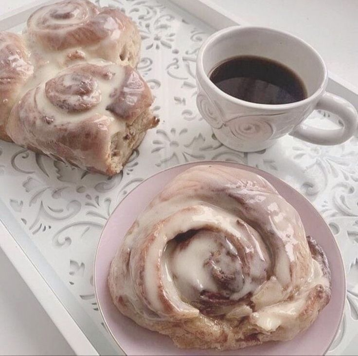

Ingredients
- 2 ¾ cups all-purpose flour
- ¼ cup granulated sugar
- 1 tsp salt
- 1 packet instant yeast
- ½ cup warm milk
- ¼ cup unsalted butter, melted
- 1 large egg
- ½ cup brown sugar
- 2 tbsp cinnamon
- ¼ cup unsalted butter, softened
- 1 cup powdered sugar (for icing)
- 2 tbsp milk (for icing)
- ½ tsp vanilla extract (for icing)
Instructions
- In a large mixing bowl, combine the flour, sugar, salt, and yeast.
- Warm the milk and melt the butter together, then add to the dry ingredients.
- Add the egg and mix until dough forms. Knead for 5-7 minutes until smooth.
- Let the dough rise in a warm place for 1 hour until doubled in size.
- Roll out the dough into a rectangle, spread with softened butter, then sprinkle with brown sugar and cinnamon.
- Roll the dough tightly and cut into 12 rolls. Place them in a greased baking dish.
- Let the rolls rise for 30 minutes, then bake at 350°F (175°C) for 20-25 minutes until golden.
- Mix powdered sugar, milk, and vanilla to make the icing. Drizzle over the warm rolls and enjoy!